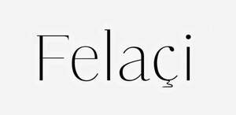

Trade Mark Journal No.2025/037 12 September 2025
UK00004256124 29 August 2025 (14,18,25,35,40,41,45)

- Class 14
- Fashion jewellery; Dress ornaments in the nature of jewellery; Costume jewellery.
- Class 18
- Fashion handbags; Bags for sports clothing; Holdalls for sports clothing.
- Class 25
- Fashion hats; Menswear; Ready-to-wear clothing; Knitwear [clothing]; Face masks [fashion wear] ; Casual clothing; Foulards [clothing articles]; Clothing; Casual footwear; Dance clothing; Sportswear; Clothing for sports; Sports clothing; Playsuits [clothing]; Bandeaux [clothing]; Parts of clothing, footwear and headgear; Footwear; Leisure clothing; Leather clothing; Clothing of leather; Leather (Clothing of -); Denims [clothing]; Articles of sports clothing; Knitwear; Smart clothing; Corsets [clothing, foundation garments]; Articles of clothing; Headbands [clothing]; Headbands for clothing; Footwear for women; Cashmere clothing; Footwear for sports; Sports footwear; Sports garments; Athletic clothing; Men's clothing; Jackets being sports clothing; Clothing for wear in wrestling games; Clothing of imitations of leather; Leather (Clothing of imitations of -); Furs [clothing]; Footwear for use in sport; Leisure footwear; Footwear for sport; Articles of clothing made of leather; Clothes for sport; Clothing for skiing; Corsets [foundation clothing].
- Class 35
- Retail services in relation to fashion accessories; Fashion show exhibitions for commercial purposes; Promoting the sale of fashion goods through promotional articles in magazines; Fashion shows for promotional purposes (Organization of -); Organization of fashion shows for promotional purposes; Organisation of fashion shows for commercial purposes; Organization of fashion parades for sales promotion purposes; Retail services connected with the sale of clothing and clothing accessories.
- Class 40
- Tailoring or dressmaking.
- Class 41
- Entertainment in the nature of fashion shows; Organizing and presenting displays of entertainment relating to style and fashion; Organization of fashion parades for entertainment purposes; Organisation of fashion shows for entertainment purposes; Fashion shows for entertainment purposes (Organization of -); Organization of fashion shows for entertainment purposes; Education services relating to fashion; Entertainment in the nature of beauty pageants.
- Class 45
- Providing fashion information; Personal fashion consulting services; Personal wardrobe styling consultancy; Personal wardrobe styling services.
FELACI LIMITED